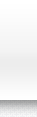

背景画像を透過させる場合はPhotoshopでPNG24で書き出しをします。
その際に透明にしたい部分の背景などは非表示してください。
またIE6は透過PNGが非対応なのでIE6で透過PNGを対応にさせる場合はjQueryなどのJavascriptで対応させる必要があります。
【今回使用したヘッダーの背景画像】
 bg_header.png
【positionを使用して画像を重ね合わせる】
サンプルテキストテキストテキストテキストテキストテキストテキストテキストテキストテキストテキストテキストテキストテキストテキストテキストテキストテキストテキストテキストテキストテキストテキストテキストテキストテキストテキストテキストテキストテキストテキストテキストテキストテキストテキストテキストテキストテキストテキストテキストテキストテキストテキストテキストテキストテキストテキストテキストテキストテキストテキストテキストテキストテキストテキストテキスト